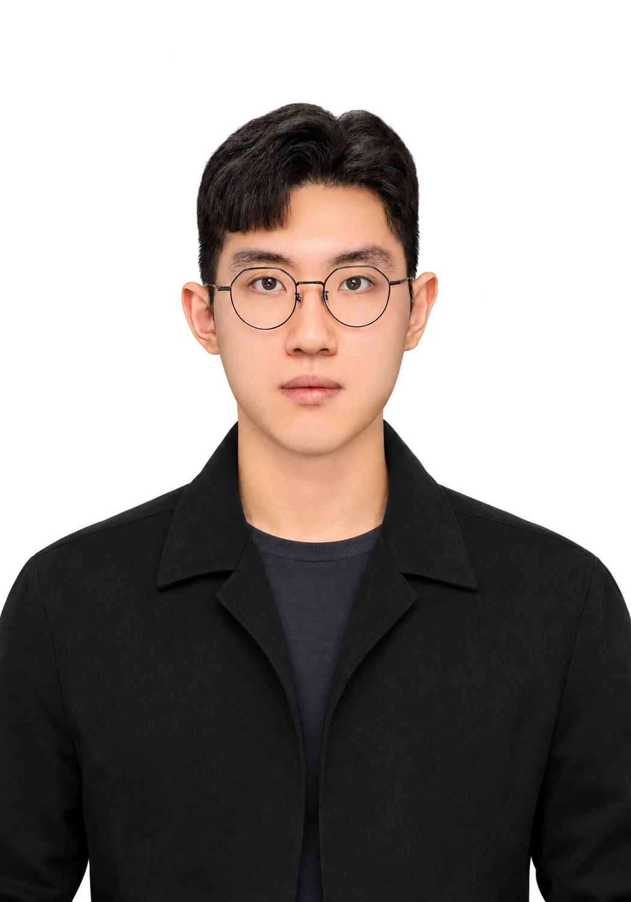

카네기 멜런 대학교
2024.08–현재 · Tepper School of Business
- 경영학 학사 과정 1학년을 이수하고 군 복무를 위해 휴학했습니다.
- KASA 운영진·펀드레이징 총괄로 문화 교류 행사와 모금 활동을 운영했습니다.
카네기멜런 대학교 테퍼 경영대학에 재학 중인 권태훈입니다. 군 장병을 위한 AI 정신건강 지원 플랫폼의 시장 조사와 사업모델 기획에 참여하고, 금융 데이터를 분석해 암호화폐의 헤지자산 가능성을 연구했습니다. 또한 한인·한국계 미국인 학생회 운영진으로 다른 문화권 학생회와 협력해 퓨전 음식 체험 행사를 기획하고, 모금 활동과 운영 비용을 관리했습니다.
이러한 경험을 통해 근거를 바탕으로 문제를 분석하고, 서로 다른 사람들의 관점을 반영해 해결 방향을 구체화하는 역량을 길렀습니다. 저는 정보를 이해하고 분석하여, 다른 사람도 쉽게 이해하고 활용할 수 있는 결과물로 만드는데 가치를 두는 사람입니다.

PROJECTS
연구에서 서비스 기획과 현장 운영까지.
JOURNEY
2024.08–현재 · Tepper School of Business
2025.05–2026.11 · 통신병·통역병
2021.03–2024.01 · 졸업